Knowledge Base
Overview
Transform VXR is an AI-powered conversational simulation game designed to help you practice crucial communication skills in emotionally charged, real-world scenarios. You speak out loud with a lifelike AI Coach character who responds dynamically to what you say. The goal is not to fix or explain situations — it is to understand and listen with intention. After each session, your active participation time counts toward CEU (Continuing Education Unit) credits.
What You’ll Need
- A computer with a working webcam and microphone
- A stable internet connection (note: slower connections may cause the AI’s responses to lag)
- A web browser — the game runs at app.transformvxr.com/game
Setup: Step-by-Step
Welcome Screen
The game opens with a Welcome screen that explains the core premise:
- You will talk with a lifelike Transform AI Coach in a real-world scenario.
- Your goal is to understand and listen with intention, not to fix or explain.
- You will receive real-time feedback to help you grow.
Click Next to proceed.
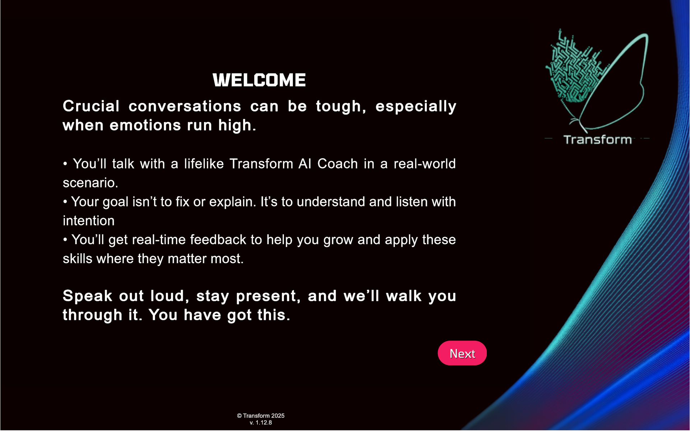
Heads Up Before You Start (Disclaimer)
A brief disclaimer reminds you that while the simulation is grounded in the Relational Intelligence Framework and learning science principles, Transform cannot guarantee every statement the AI Coach makes. Click Next to continue.
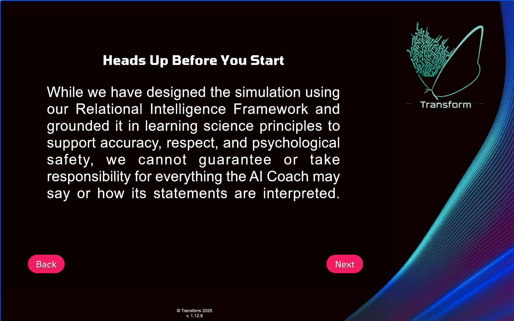
Webcam / Microphone Setup
Your camera feed appears on screen so you can verify your webcam is working. Click Request Permissions to grant the browser access to your microphone. Once detected, a green “Mic Detected & Ready!” button confirms your mic is active. Click Next to continue.
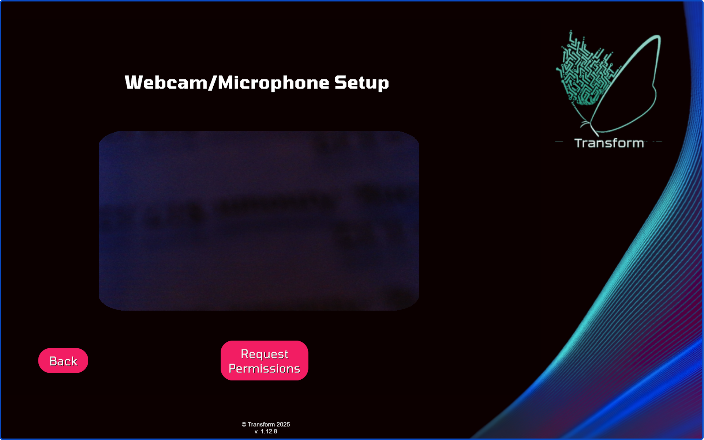
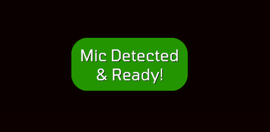
Customization: Building Your Scenario
You make five consecutive choices that together define your practice session. Each choice flows directly into the next based on your selection.
Choice 1 — Conversation Partner
Pick the AI character you want to interact with. There are four options, each a unique avatar:
| Character | Appearance |
|---|---|
| Imani | Professional woman, short natural hair |
| Cynthia | Character with stylized hair |
| River | Young man, dark hair |
| Luis | Man with shorter hair |
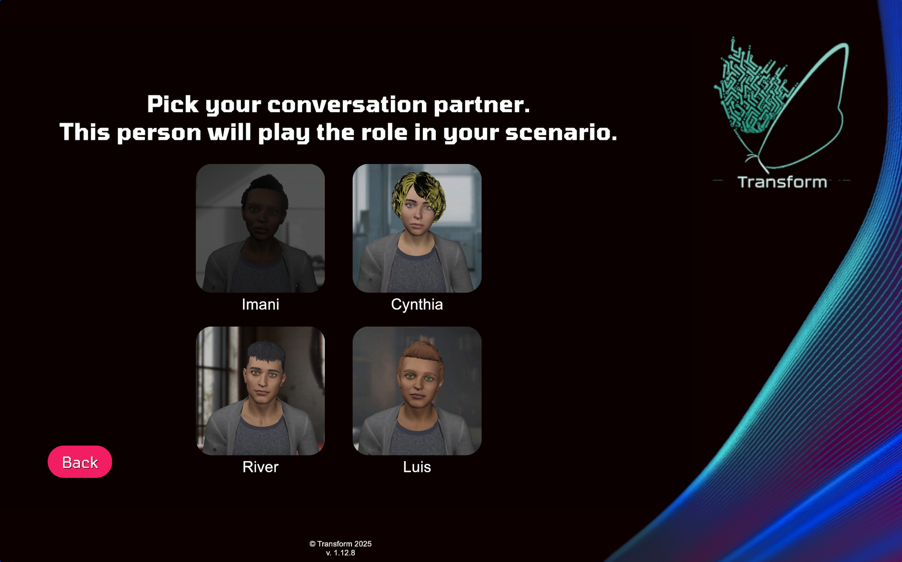
Choice 2 — Personality
Choose how your conversation partner will behave during the session:
| Personality | Description |
|---|---|
| Personality 1 | Speaks with a firm tone; quickly corrects misunderstandings to make their point. |
| Personality 2 | Speaks with low energy; shows little interest or engagement in the conversation. |
| Personality 3 | Speaks with urgency; seeks reassurance and tries hard to connect. |
| Personality 4 | Speaks with hesitation; often asks questions to understand what’s being said. |
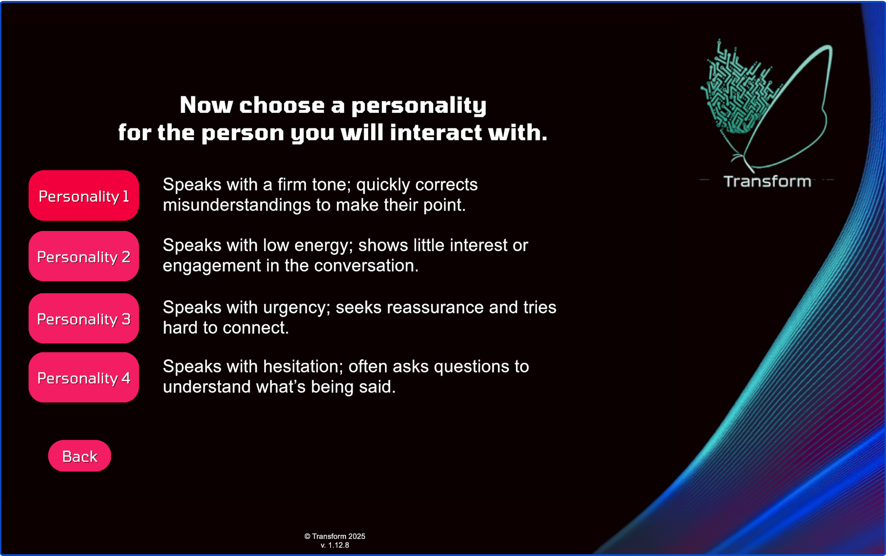
Choice 3 — Setting
Choose the environment where the conversation takes place:
- Office — A professional workplace setting
- Clinic — A medical or clinical environment
- Coffee Shop — An informal, casual setting
- Living Room — A personal, home setting
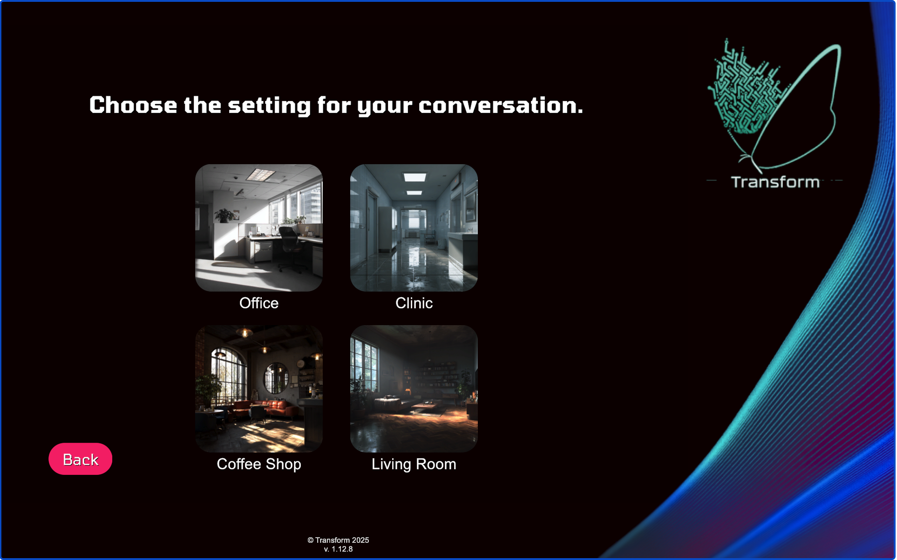
Choice 4 — Scenario
Choose the specific situation you want to practice. Available scenarios are tied to your chosen setting. In the Office setting, for example, you will see:
- “Parent of a child with Autism expresses frustration about your services.”
- “Your supervisor gives you an unfair quarterly review.”
- “Your direct report arrives late after dealing with family stress.”
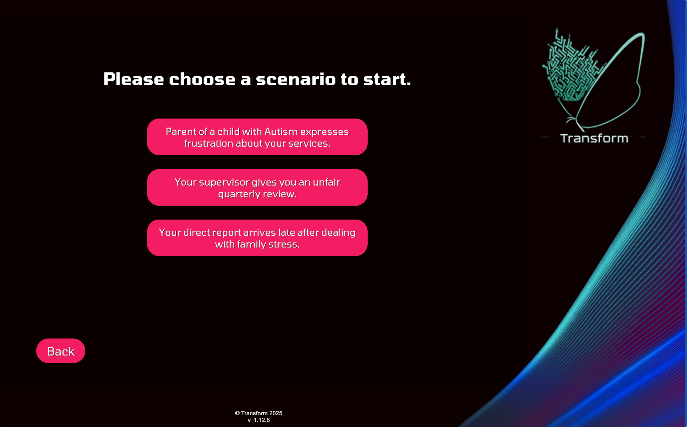
Choice 5 — Skill Set to Practice
Select which communication skill(s) you want to focus on during the session:
| Skill Set | Description |
|---|---|
| Taking Perspective | Practice seeing the situation through the other person’s eyes. |
| Recognizing & Regulating Emotions | Practice identifying and managing emotional signals. |
| Listening with Curiosity | Practice open, non-judgmental listening. |
| Showing Empathy | Practice expressing understanding and care. |
| Practice All of the Skills | Combines all four skills in one session. |
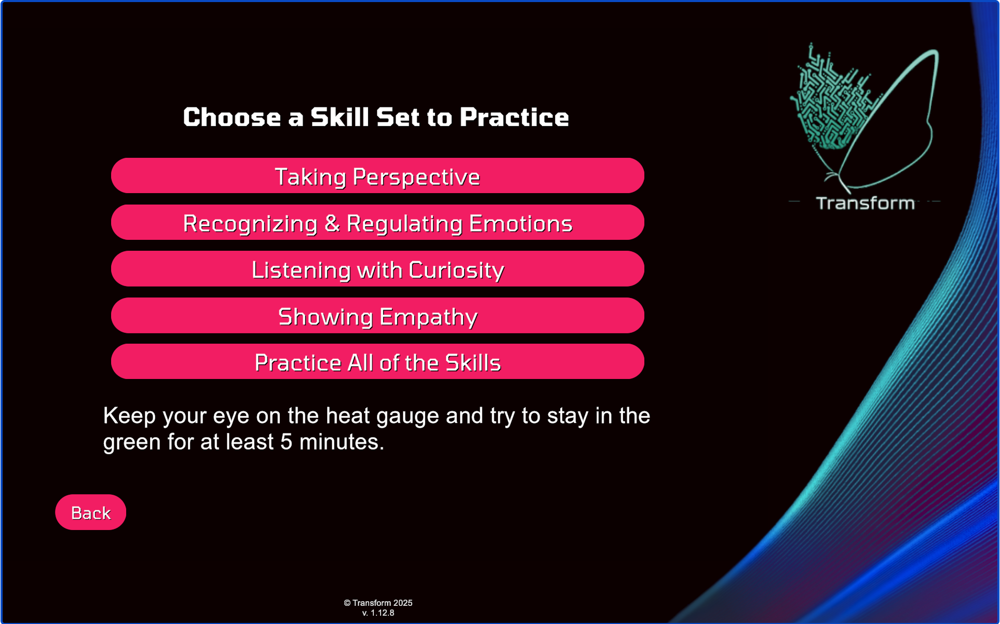
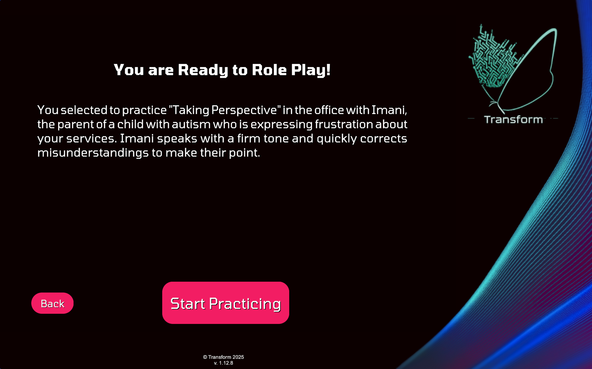
During the Session: The Game Interface
Once the session starts, the main screen shows the AI character in a realistic 3D environment. Here is an overview of the full interface:
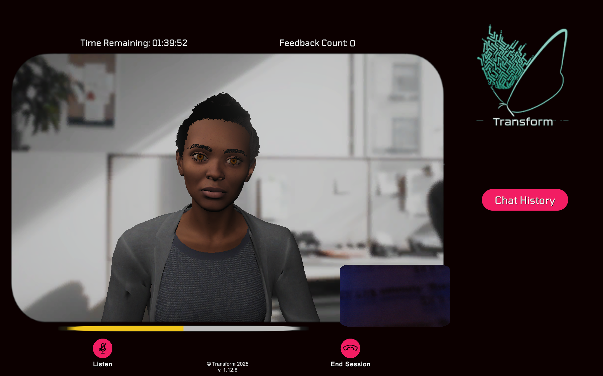
HUD (Heads-Up Display)
At the top of the screen you will find two persistent indicators:
- Time Remaining — A countdown timer showing how much practice time is left. Sessions can run up to approximately 1 hour and 40 minutes.
- Feedback Count — Tracks how many pieces of real-time feedback you have received from the AI Coach during the session.
In the center of the screen, the AI character is displayed in the 3D environment matching your chosen setting. The character animates and speaks in real time. A small picture-in-picture webcam feed (your camera) appears in the lower corner of the character viewport.
The Heat Gauge
The heat gauge is a color-coded bar running along the bottom of the AI character’s viewport. It represents the emotional temperature of the conversation in real time:
How to Interact: The Listen / Speak Toggle
The game is entirely voice-based. Interaction works through a two-state button at the bottom of the screen:
- Listen mode (default when the AI is speaking) — The button shows a microphone icon labeled “Listen.” The AI character is speaking. Wait and listen attentively before responding.
- Speak mode — Click the button to activate your microphone. Speak out loud as if you are genuinely in the conversation. When finished, click the button again to send your response.
- Loading response — After submitting your response, a “Loading response” indicator appears while the AI generates its next reply. Response time depends on your internet connection speed.
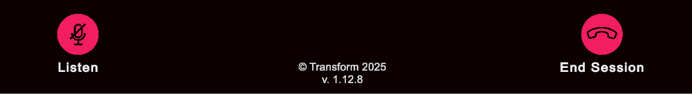
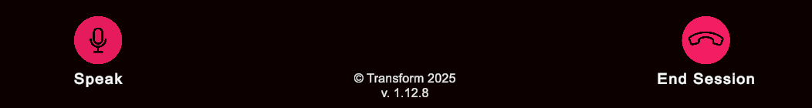
Chat History
The Chat History button on the right side of the screen opens a scrollable panel showing a timestamped transcript of everything the AI character has said. This is useful if you missed something or want to reflect between turns. Click Hide Chat to close the panel.
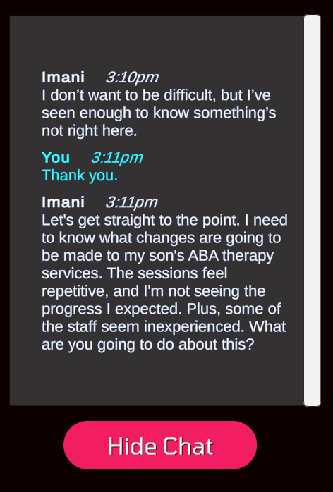
Ending a Session
Click the End Session button (phone icon) at any time to conclude your practice. The Scenario Ended screen will appear, showing:
- Active participation time — The number of minutes and seconds you were actively engaged.
- CEU credit note — A reminder that your participation time counts toward Continuing Education Unit credits.
- Navigation buttons — Jump back to any setup step to start a new session: Conversation Partner, Personality, Setting, Scenario, or Skill Set.
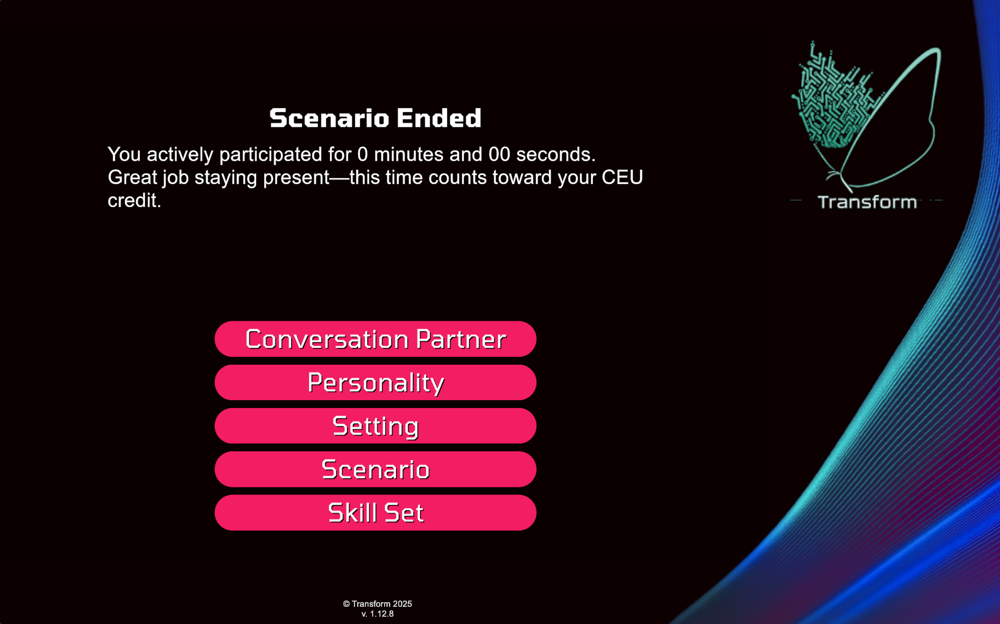
Tips for Success
- Speak naturally and out loud — the AI Coach responds to what you actually say, so treat it like a real conversation.
- Don’t try to “win” — the goal is genuine listening and empathy, not performing a script or giving textbook answers.
- Watch the heat gauge — it gives you real-time cues about the emotional temperature of the conversation.
- Use Chat History to review what the character has said if you missed something or want to reflect between turns.
- Try different combinations — each personality + scenario combination creates a unique challenge. A firm-toned character (Personality 1) in a clinic will feel very different from a hesitant character (Personality 4) in a living room.
- Aim for 5 minutes in the green — this is the core performance goal stated before each session begins.
- Restart from any step — after a session ends, use the navigation buttons to swap just one variable (e.g., same scenario, different personality) for targeted, focused practice.
Technical Notes
- The game requires an active internet connection to generate AI responses in real time.
- If your connection is slow, you may see a “Loading response” message noting your ping and download speeds. AI Coach responses may take longer under these conditions.
- The game is version 1.12.8 and is powered by Transform’s Relational Intelligence Framework.
- The platform records your active session time for CEU credit tracking purposes.